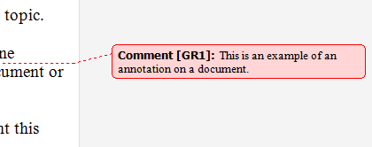

title: Annotation Control Pattern
description: Describes guidelines and conventions for implementing IAnnotationProvider, including information about properties and methods. The Annotation control pattern is used to expose the properties of an annotation in a document.
ms.assetid: 5A334991-66AF-4A82-9A09-09D5BDAAA771
keywords:
- UI Automation,implementing annotation control pattern
- UI Automation,annotation control pattern
- UI Automation,IAnnotationProvider
- IAnnotationProvider
- implementing UI Automation annotation control pattern
- annotation control pattern
- control patterns,IAnnotationProvider
- control patterns,implementing UI Automation annotation
- control patterns,annotation
- interfaces,IAnnotationProvider
ms.topic: article
ms.date: 05/31/2018
Annotation Control Pattern
Describes guidelines and conventions for implementing IAnnotationProvider, including information about properties and methods. The Annotation control pattern is used to expose the properties of an annotation in a document.
One example is a comment balloon that is in the margin of a document and is connected to some document text or a spreadsheet cell.
The following illustration shows an example of an annotation. For examples of controls that implement this control pattern, see Control Types and Their Supported Control Patterns.

This topic contains the following sections.
Implementation Guidelines and Conventions
When implementing the Annotation control pattern, note the following guidelines and conventions:
- There are many different kinds of annotations. The UIAutomationClient.h header file defines a set of named constant values that identify the types of annotations that Microsoft UI Automation supports. For more information, see Annotation Type Identifiers.
- If you use AnnotationType_Unknown, you must implement the IAnnotationProvider::AnnotationTypeName property to enable clients to discover the name of the annotation type. You do not need to implement AnnotationTypeName for a standard annotation type because UI Automation provides a default name, but you can implement it if you need to override the default name.
- The IAnnotationProvider::Author property is optional.
- The IAnnotationProvider::DateTime property is optional.
- The IAnnotationProvider::Target property is required because it links an annotation to a UI element, enabling a client to navigate from the annotation back to the UI element to which the annotation refers.
- Because annotations can take many different forms, the IAnnotationProvider interface does not define a property for storing the value or text of an annotation. A simple annotation should expose the IValueProvider interface, and the IValueProvider::Value property should return a read-only value that specifies the annotation text. A richer annotation should expose the ITextProvider interface to provide richer text to clients.
- Navigating from a UI element to an annotation on the element depends on the kind of element being annotated, as follows:
- Some kinds of annotations do not require a full implementation of the IAnnotationProvider interface. For example, a simple spelling-error indicator could be represented by having the ITextRangeProvider interface return an AnnotationTypes text attribute of AnnotationType_SpellingError, and a null value for the AnnotationObjects text attribute.
- It can be useful to implement the IAnnotationProvider interface on a UI element that is not visible. For example, you could create a non-visible UI Automation element that implements IAnnotationProvider to provide extended information about a grammar error.
- Annotations in a text-based control can be complex if the control contains overlapping comments. Use the following guidelines to handle complex annotations:
Required Members for IAnnotationProvider
The following properties are required for implementing the IAnnotationProvider interface.
Â
This control pattern has no associated events.
Related topics
Control Types and Their Supported Control Patterns
UI Automation Control Patterns Overview
UI Automation Tree Overview
Â
Â